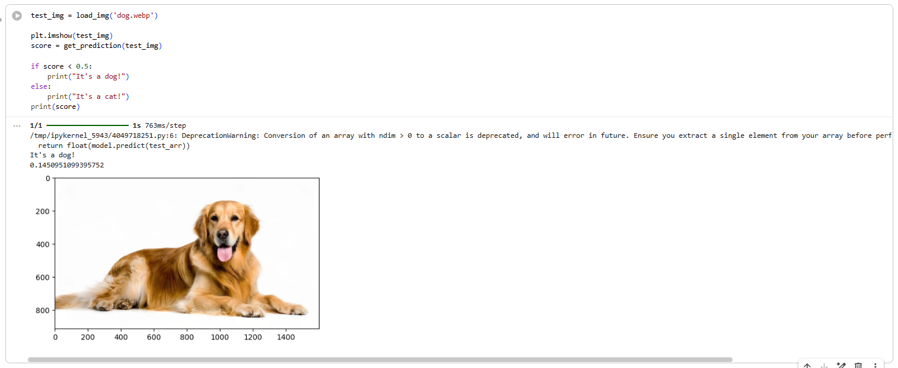
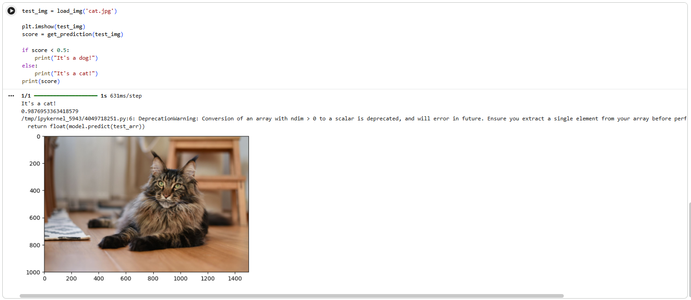

Finals - Lab Exercise 5 (Dogs vs. Cats Classifier)
Description: A deep learning project focusing on binary image classification. The goal was to build and train a Convolutional Neural Network (CNN) capable of accurately distinguishing between images of dogs and cats.
Objectives/Purpose:
- To efficiently load and preprocess large image datasets using Keras's
ImageDataGenerator. - To design a CNN architecture specifically optimized for binary classification tasks.
- To train the network using binary crossentropy loss and evaluate its generalization on validation data.
- To perform live inference on external, unseen images of cats and dogs to verify real-world accuracy.
Key Features
- Dynamic Data Loading: Utilized
ImageDataGeneratorto automatically load images from directory structures in batches, applying real-time pixel normalization (1./255) to prevent RAM exhaustion. - Binary Classification Architecture: Transitioned from the Softmax output used in previous multi-class projects (like CIFAR-10) to a single-node Sigmoid output layer, which maps features to a probability score between 0 and 1.
- Threshold-Based Inference: Developed a custom prediction script that evaluates the Sigmoid output, classifying the image as a "Dog" if the probability exceeds 0.5, and a "Cat" if it falls below.
Important Code Blocks
1. Image Data Generation
This snippet demonstrates how memory constraints are bypassed. Instead of loading thousands of images into an array at once, the generator streams them from the directory in manageable batches while scaling the pixels.
from tensorflow.keras.preprocessing.image import ImageDataGenerator
# Rescale pixel values to a [0, 1] range
train_datagen = ImageDataGenerator(rescale=1./255)
training_set = train_datagen.flow_from_directory(
'dataset/training_set',
target_size=(64, 64),
batch_size=32,
class_mode='binary'
)2. Network Compilation for Binary Output
Unlike CIFAR-10 which used 10 output nodes and sparse categorical crossentropy, this model uses a single node with a Sigmoid activation and binary crossentropy for loss calculation.
# Output layer for binary classification
model.add(tf.keras.layers.Dense(units=1, activation='sigmoid'))
# Compiling the CNN
model.compile(optimizer='adam', loss='binary_crossentropy', metrics=['accuracy'])3. Single Image Prediction Logic
After passing an unseen image through the trained network, the raw output is evaluated against a 0.5 mathematical threshold to determine the final class label.
# Make the prediction
result = model.predict(img_batch)
# Evaluate the probability output
if result[0][0] > 0.5:
prediction = 'Dog'
else:
prediction = 'Cat'
print(f"The model predicts: {prediction}")Screenshots & Results


Observations:
- The model successfully classified both custom test images correctly. The CNN effectively learned to distinguish complex, abstract features (like snout shapes, ear structures, and eye pupils) rather than just memorizing training data.
Tools & Technologies
- Languages: Python 3
- Libraries/Frameworks: TensorFlow/Keras (ImageDataGenerator, Conv2D, Binary Crossentropy), NumPy
- Platforms: Google Colab
Challenges & Solutions
Problems Encountered: The primary challenge was managing the dataset structure. Standard arrays (like X_train and y_train used in previous projects) are inefficient for thousands of high-resolution images, often crashing the Colab runtime environment due to RAM limits.
How I Solved Them: I implemented Keras's flow_from_directory method. By organizing the dataset into strictly named subfolders (e.g., a 'cats' folder and a 'dogs' folder), the generator automatically inferred the class labels and loaded images sequentially only when needed during training epochs, completely resolving the memory bottleneck.
Learning Reflection
What I Learned: I learned the architectural differences between multi-class and binary classification networks. Furthermore, I gained practical experience handling raw directory-based datasets, bridging the gap between curated academic datasets (like the pre-packaged CIFAR-10) and real-world data engineering.
Skills Gained: Pipeline construction with ImageDataGenerator, implementing Sigmoid activation functions for probability thresholding, and organizing directory structures for automated label mapping.